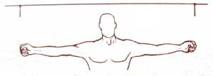
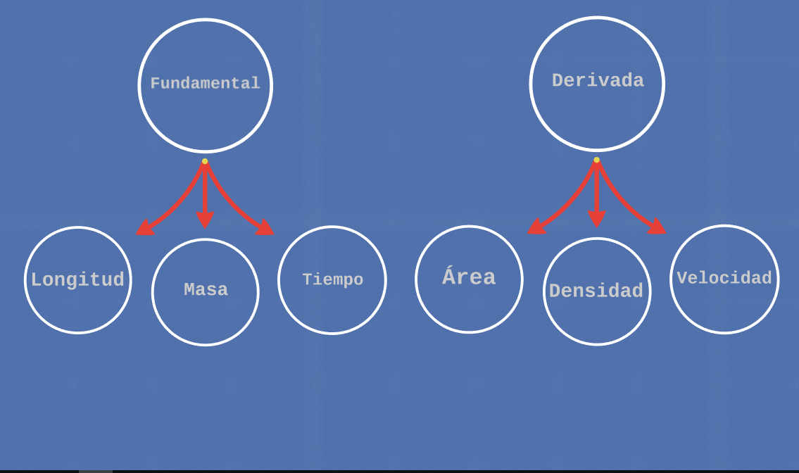
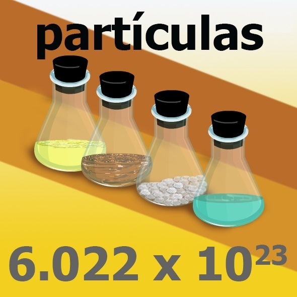
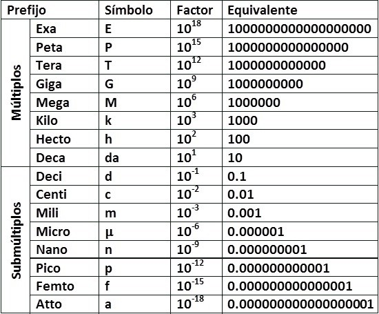

Método científico y medición
Teoría
Explica un fenómeno con el que se fundamenta un conocimiento
Fenómeno
Cambios espontáneos que suceden en la naturaleza
Los cambios pueden ser inducidos para su estudio
Método científico
Reglas y normas para realizar una investigación, y que sea objetiva
Observación
Aplicar nuestros sentidos a un fenómeno o aspecto del universo para recopilar información

Planteamiento del problema
Definir la problemática a la cual se le quiere dar solución o ampliar conocimiento
Formular hipótesis
Se elabora una hipótesis para predecir el fenómeno y dar posibles explicaciones o soluciones

Experimentación
Reproducir el fenómeno para poner a prueba la hipótesis

Comprobación o análisis de resultados
Comprobar con los resultados de la experimentación si la hipótesis es cierta
Si es consistente el resultado, se llega a una ley o teoría
Medición
Para entender la naturaleza y explicarla, el hombre tubo la necesidad de medir
Comparar una magnitud con otra de la misma especie
Al medir siempre intervienen tres aspectos:
Lo que se mide

Las unidades de medida de un sistema establecido
cm
El aparato o instrumento de medición
Mediciones
Directas
Indirectas
Exactitud
Las mediciones exactas y confiables requieren unidades estandarizadas

Sistemas de unidades
En la antigüedad se usan partes del cuerpo para realizar mediciones

Sistema métrico decimal
Adoptado internacionalmente en la CGPM de 1889
Magnitud
Todo aquello que puede ser medido y se representa con un número y una unidad
Magnitudes fundamentales
Sirven de base para obtener las demás magnitudes usadas en física

Sistema internacional de unidades
Kilogramo
Metro
Distancia recorrida por la luz en el vacío durante un intervalo de $$\frac{1}{299792458}s$$
Segundo
Tiempo requerido por un átomo de cesio 133 para realizar 9192631770 vibraciones
Kelvin
Equivale $$\frac{1}{273.16}$$ de la temperatura termodinámica del punto triple del agua
Ampere
Intensidad de corriente eléctrica ente dos conductores
Mol
Cantidad de sustancia

Candela
Intensidad luminosa

Unidades derivadas
Prefijos de unidades

Conversiones de unidades
Ejemplos
Errores
Ejemplos